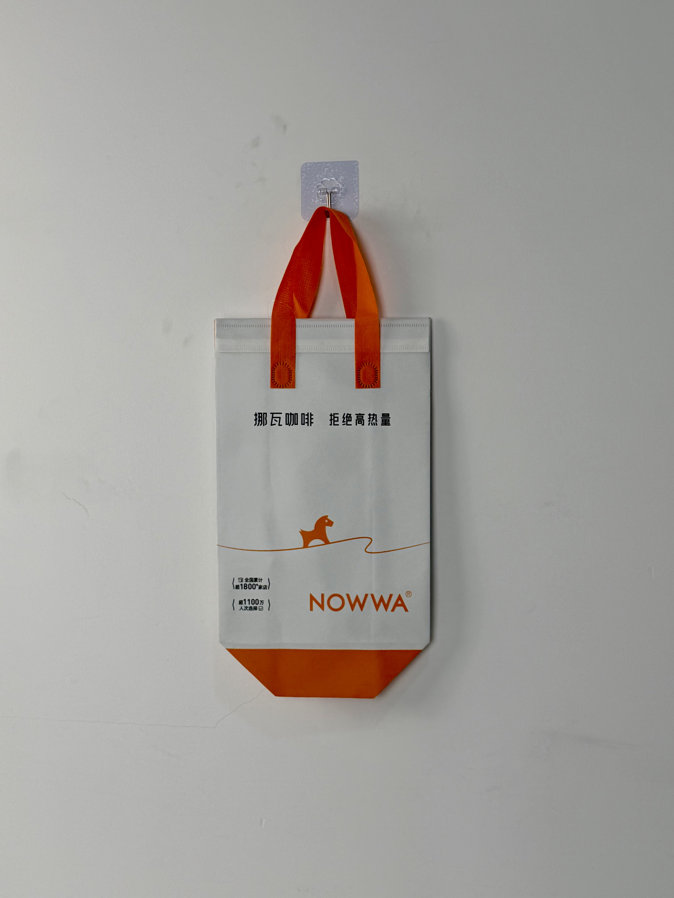

A clean white-and-orange thermal carrier for NOWWA Coffee, featuring the iconic pony brand mark and transparent credibility metrics that communicate scale and consumer trust at first glance.

NOWWA Coffee is one of China's fastest-growing coffee chains, having expanded to over 1,800 locations nationwide in just a few years. Positioned as a healthier alternative to traditional coffee chains, the brand's "拒绝高热量" (Reject High Calories) slogan targets health-conscious consumers who want coffee without excessive sugar and calories. The orange pony mascot has become one of the most recognizable brand marks in China's competitive coffee landscape.
Every bag that leaves our stores is a billboard. With thousands of daily deliveries, that's millions of brand impressions — but only if the design is worth looking at.
The thermal bag project was initiated as part of NOWWA's nationwide brand-standardization program. With franchise locations expanding rapidly, the company needed delivery packaging that maintained consistent brand presentation across all stores while reinforcing the health-positioning message that differentiates NOWWA from competitors.
The design philosophy centers on radical transparency: the bag doesn't just carry coffee, it communicates brand credibility. Store-count and customer-count statistics are displayed prominently, turning the delivery bag into a trust-building device. The clean white field with selective orange accents creates a fresh, healthy aesthetic that visually reinforces the low-calorie positioning.
Simple orange pony silhouette on a flowing line creates memorable brand symbol with minimal visual weight.
"1,800+ stores, 11M+ customers" builds credibility and social proof directly on the packaging.
"挪瓦咖啡 拒绝高热量" communicates the brand's core differentiator in every delivery.
White body with orange bottom wedge and handles creates clean, energetic visual rhythm.
NOWWA's nationwide scale demands packaging that performs consistently across diverse climate zones — from the humid subtropical south to the cold dry north. The thermal bag specification prioritizes versatility and durability for year-round deployment.
| Parameter | Specification | Test Standard |
|---|---|---|
| Temperature Retention | Hot > 55°C / Cold < 12°C for 40 min | Internal Protocol |
| Load Capacity | 3 kg | ASTM D5265 |
| Color Fastness | Grade 4-5 | ISO 105-B02 |
| Seam Strength | > 22 N/cm | ASTM D1683 |
NOWWA's nationwide scale requires production capacity that can deliver consistent quality across millions of units. The five-stage workflow was designed for high-volume efficiency without compromising brand-standard precision.
100gsm non-woven PP with optical-white masterbatch. Color consistency verified across multiple production lines serving different regional distribution centers.
Orange plastisol for pony mark and bottom wedge. Black plastisol for metrics and typography. Registration within ±0.5mm.
15-micron matte BOPP for clean, modern surface finish. Reduces surface glare and enhances readability of metrics text.
3mm EPE foam laminated to aluminum-PE barrier. Heat-compression at 3.5kg/cm for uniform insulation performance across all climate zones.
Ultrasonic die-cutting with sealed edges. Orange handles attached with reinforced stitching. Batch sampling every 2,000 units for color and print verification.
The thermal bag was deployed across NOWWA's entire store network of 1,800+ locations, replacing a patchwork of regional packaging variations with a unified national brand standard. Rollout timing coincided with the brand's summer cold-brew campaign and autumn hot-drink transition.
Key Insight: Franchisee feedback revealed that the visible store-count metric on the bag helped smaller-market locations compete against established international chains. Customers seeing "1,800+ stores" on a local delivery were more likely to trust the brand, overcoming the "unknown local chain" hesitation that new franchisees faced.
The two-tone design proved operationally effective as well. The orange bottom wedge made the bag easy to identify on pickup racks and in delivery-staging areas, reducing order-mix errors during peak morning rushes when coffee demand surges.
Three design decisions differentiate this coffee-chain delivery bag from standard beverage packaging. Each addresses the specific challenges of building brand trust in China's hyper-competitive coffee market.
In a market where new coffee brands appear weekly, consumers face choice paralysis. By displaying store count and customer numbers directly on the bag, NOWWA preemptively answers the "Is this brand legitimate?" question. The metrics function as social proof that reduces perceived risk for first-time customers.
While competitors use abstract logos, geometric marks, or coffee-cup icons, NOWWA's pony mascot creates emotional accessibility. The animal character feels friendly and approachable — a strategic choice that lowers barriers for consumers intimidated by "serious coffee culture."
Orange is psychologically associated with energy, enthusiasm, and health — all attributes NOWWA wants to communicate. Unlike the aggressive reds of some competitors or the clinical whites of others, orange strikes a balance between vitality and cleanliness that aligns with the "healthy coffee" positioning.
We manufacture high-volume thermal delivery bags for coffee and beverage chains. From franchise-standard consistency to brand-trust design, we deliver packaging that scales with your growth.